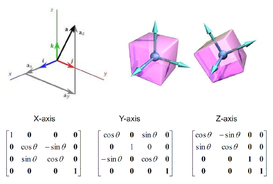

Three.js is a library that aims to take the pain out of creating 3D worlds in WebGL. How it does this and how well is the main thrust of this talk...
- Kyran Dale / @hakimel
You can't avoid a little maths. You don't have to love vectors and matrices but you should try and feel a little fondness for them.

var SCENE_WIDTH = 800, SCENE_HEIGHT = 600,
// camera attributes
CAMERA_VIEW_ANGLE = 45,
CAMERA_ASPECT = SCENE_WIDTH / SCENE_HEIGHT,
// we'll be attaching the scene to a DOM element
scene_container = $('#container'),
// THREE.js key elements
// This will do the actual GL-drawing:
renderer = new THREE.WebGLRenderer(),
// This is the eye on the world:
camera = new THREE.PerspectiveCamera(
CAMERA_VIEW_ANGLE, CAMERA_ASPECT, 0.1/*NEAR*/, 1000/*FAR*/
),
// This sets the...
scene = new THREE.Scene();
// Now to hook up the THREE.js pieces
scene.add(camera)
// pull camera back to better vantage point
camera.position.z = 300;
// set renderer's size
renderer.setSize(SCENE_WIDTH, SCENE_HEIGHT);
// and attach to our container DOM
scene_container.append(renderer.domElement);
// Adding a cube...
var cube = new THREE.Mesh(
new THREE.CubeGeometry(50,50,50),
new THREE.MeshBasicMaterial( {color: 0x111111, opacity:1})
);
scene.add(cube);
renderer.render(scene, camera);
// some light on the situation
var cube = new THREE.Mesh(
new THREE.CubeGeometry(50,50,50),
// new THREE.MeshBasicMaterial( {color: 0x111111, opacity:1})
new THREE.MeshLambertMaterial( {color: 0xcccccc})
);
scene.add(cube);
// some light on the situation
var light = new THREE.SpotLight();
light.position.set( 150, 150, 150 );
scene.add(light);
camera.position.y = 50;
cube.rotation.y += 0.7; // !NOTE! all rotations in radians
renderer.render(scene, camera);
// A grey background for the white texture
renderer.setClearColorHex(0xEEEEEE, 1.0);
// Add a texture-map to the cube
var cube = new THREE.Mesh(
new THREE.CubeGeometry(50,50,50),
// new THREE.MeshBasicMaterial( {color: 0x111111, opacity:1})
// new THREE.MeshLambertMaterial( {color: 0xcccccc})
new THREE.MeshBasicMaterial( { map: THREE.ImageUtils.loadTexture( '/images/async_logo.jpg' ) })
);
scene.add(cube);
// and animate
animate();
function animate() {
requestAnimationFrame( animate );
renderer.render(scene, camera);
}
var last_t = new Date().getTime();
function animate(t) {
// smoothly rotate about y (our up) axis
cube.rotation.y += (t-last_t)*0.001;
last_t = t;
requestAnimationFrame(animate);
renderer.render(scene, camera);
};
animate(new Date().getTime());
function add_cube(x, y, z){
var cube = new THREE.Mesh(
new THREE.CubeGeometry(50,50,50),
new THREE.MeshBasicMaterial( { map: THREE.ImageUtils.loadTexture( '/images/async_logo.jpg' ) })
);
cube.position.set(x, y, z);
scene.add(cube);
return cube;
}
var scene_cubes = [];
scene_cubes.push(add_cube(0, 0, 0));
scene_cubes.push(add_cube(0, 50, 0));
scene_cubes.push(add_cube(0, 100, 0));
function animate(t) {
for(i in scene_cubes){
cube = scene_cubes[i];
cube.rotation.y += 2 * (i%2 - 0.5) * (t-last_t)*0.001;
}
last_t = t;
requestAnimationFrame(animate);
renderer.render(scene, camera);
};
cameraCube = new THREE.PerspectiveCamera( 60, window.innerWidth / window.innerHeight, 1, 100000 );
sceneCube = new THREE.Scene();
var path = "/images/cube/skybox/";
var format = '.jpg';
var urls = [
path + 'px' + format, path + 'nx' + format,
path + 'py' + format, path + 'ny' + format,
path + 'pz' + format, path + 'nz' + format
];
var textureCube = THREE.ImageUtils.loadTextureCube( urls, new THREE.CubeRefractionMapping() );
var material = new THREE.MeshBasicMaterial( { color: 0xffffff, envMap: textureCube, refractionRatio: 0.95 } );
// [ a little shader boiler-plate ]
mesh = new THREE.Mesh( new THREE.CubeGeometry( 100, 100, 100 ), material );
sceneCube.add( mesh );
// in animate cycle
renderer.render( sceneCube, cameraCube );